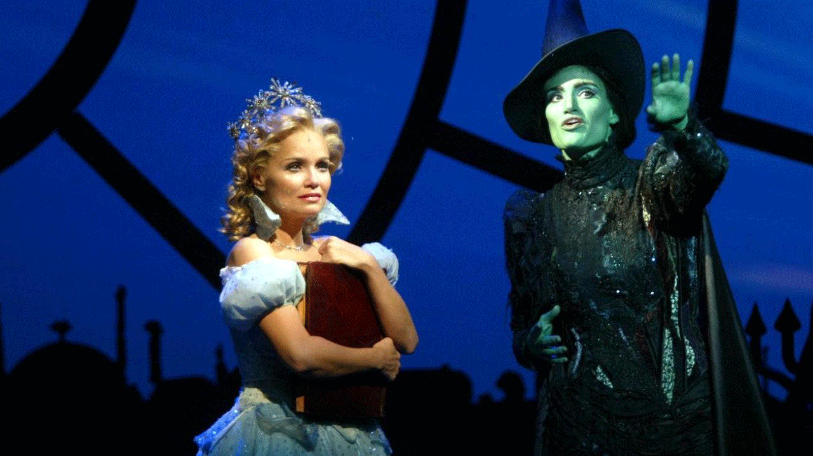

Is there a song that you go to in your playlist automatically for a recharge of energy after a very long day? Or when you've had a hard week that just drained you of your inspiration? For me there are songs like that out there but several of them are preformed by the artist known as Idina Menzel.Mostly I know her to be Elphaba in "Wicked" and her preformences of "Defying Gravity" and "No Good Deed" are permanent residents of my playlist.
Rising to fame in the musical theater area of Broadway, Idina Menzel is an american actress who started her public singing career at 15 and continued to climb to the top of the charts. Even Disney took notice of her skills and we can all identify her voice in "Frozen" as Elsa, the Ice Queen of the movie. Thanks to the power within Idina Menzel's iconic voice, "Frozen"'s iconic song ("Let it Go") is hailed as a new Disney classic song and has won several academy awards.
Today, we can all see Idina Menzel in concert or hear her latest album without issue.Her first national tour happened from October 13th, 2015 to January 26th, 2016. She is still working with Disney on upcoming projects and in upcoming films. Her music embodies powerful emotion and soul that shakes the stands where her audience sits.